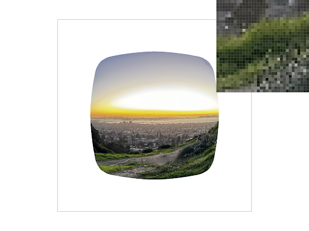
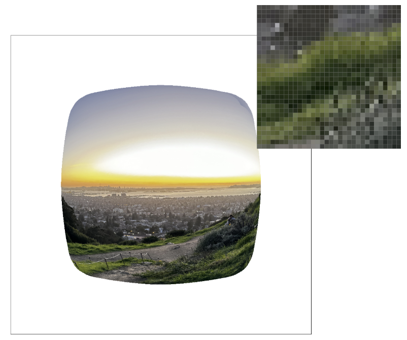

CS184/284A Spring 2025 Homework 1 Write-Up
Link to GitHub repository: github.com/cal-cs184-student/sp25-hw1-matcha4

Overview
In this homework, we built a basic rasterizer that can efficiently draw triangles, apply supersampling for anti-aliasing, and handle texture mapping with different filtering techniques. It was a really helpful way to understand the content that we had seen in lecture and actually get hands-on experience with how the graphics pipeline works, especially the rasterization process, interpolation, and texture filtering. One of the most interesting takeaways was how small optimisations, like calculating barycentric coordinates efficiently, could make a big difference in performance.Task 1: Drawing Single-Color Triangles
To rasterize a triangle, we use a bounding box approach, iterating over the pixels within the smallest rectangle that fully contains the triangle. Within this bounding box, we check whether each sample point falls inside the triangle using the edge function method. We then iterated through all pixel coordinates within this bounding box.
Instead of testing the entire pixel area, we focused on the center of each pixel, which was represented by \( (sx, sy) = (x + 0.5, y + 0.5)\) for each pixel \((x, y).\)
- We first found the smallest axis-aligned rectangle that contained the entire triangle. This gave us a local region to scan instead of checking the entire image.
- For each sampled point (sx, sy), we performed three tests based on the triangle's edges. Each edge was represented by a line equation, and we used these equations to check whether the point lay inside the triangle. This is an example of one of the line equations used: \[ -(sx - x_0) \cdot (y_1 - y_0) + (sy - y_0) \cdot (x_1 - x_0) \]
- Each edge of the triangle had one of these equations. If all three equations returned values with the same sign (all positive or all negative), the point was inside the triangle, and we coloured it in using the
fill_pixel(sx, sy, colour)helper function.
This was efficient as instead of looping over the entire screen, we only looked at a local region around the triangle. The algorithm is designed to be no worse than one that checks every sample within the bounding box of the triangle. Instead of checking multiple points within each pixel, we sampled only once at the center of the pixel. Using the line equations also made checking each pixel fast since it only required a few arithmetic operations, so, while we still considered every pixel in the bounding box, this approach efficiently determined which pixels needed to be filled.

Task 2: Antialiasing by Supersampling
For Question 2, we added supersampling to improve image quality by reducing jagged edges (aliasing). Instead of sampling just once per pixel, we took multiple samples per pixel and averaged them to smooth out edges, as shown in lecture. This meant tweaking the way we stored pixel data and how we processed triangles during rasterization.Normally, each pixel holds just one color value, but with supersampling, we stored multiple samples per pixel. This meant creating a larger buffer to keep track of extra color values. Instead of checking if the triangle covered just the center of a pixel, we tested multiple subpixel locations: if a sample landed inside the triangle, we gave it the appropriate color.
Once all triangles were rasterized, we averaged all the subpixel samples in each pixel to get the final color. Supersampling smoothed out gradients, captured smaller details and helped get rid of jagged edges, which is seen by the pixel inspector comparisons from sample rate values of 1, 4 and 16 (left to right).

|

|

|
Task 3: Transforms
We made Cubeman jump, and cross his legs, by adding a rotation to each of his legs and modifying the y parameter in the first transformation computation, so that the whole robot was raised higher in the bounding box. We also played around with the colours and wanted to make the triangles that make up each square/rectangle explicitly visible, so we filled in neighbouring triangles with contrasting shades of blue.|
|
|
|
Task 4: Barycentric coordinates
Barycentric coordinates are coordinates that represent a specific (x,y) coordinate in relation to the vertices of a triangle it is in/is not in.In this context, we dealt with the alpha, beta, and gamma, which each represented the distance between (x, y) and the edge opposite from each respective vertex (e.g., alpha corresponded to vertex A and represented the distance between (x, y) and the edge opposite vertex A).
In this task, we computed alpha, beta, and gamma using proportional distances; the distance between the opposite edge and (x, y) was divided by the distance between the opposite edge and the corresponding vertex.
Alpha, beta, and gamma were then used for the same purpose that the three-line test was used for in Task 1 – we wanted to check whether the point (x, y) was inside the triangle or not. We checked whether alpha, beta, and gamma were greater than or equal to 0 to assert that the point was indeed inside the triangle (and if it was, we proceeded to sample).
Barycentric coordinates were also useful for determining the contribution of different colors or textures to a specific point; this was done by having the vertices represent different colors. This interpretation of barycentric coordinates measured the contribution of each vertex (or texture/color) to the overall position (or texture/color) of our actual point.
Task 5: "Pixel sampling" for texture mapping
For this task, we used barycentric coordinates to check whether each point was inside the triangle or not. We then input this coordinate (which was in uv-space) into oursample_nearest and sample_bilinear functions that performed pixel sampling.
The sample_nearest function sampled the nearest pixel through these steps:
- First, it converted the uv-coordinate to a point in xy-space by scaling each component by the width and height of the mip at the given level (for task 5, the default level was 0).
- We truncated the scaled uv-coordinates by casting them as integers and using the floor operation. This step was where we found the nearest valid integer value.
- It sampled the texel (a unit on the texture map) at the corresponding (x, y) coordinate.
The sample_bilinear function, alternatively, sampled the nearest four texels and then performed a linear interpolation across those points to return a weighted average of those colors. The steps were as follows:
- Convert the coordinates in uv-space to xy-space without rounding the values.
- Find the four closest points in xy-space and sample the colors at those coordinates.
- Use the value from step 1 to find the weights for the three linear interpolations. The weight for the first two linear interpolations was the difference between the unrounded x-value and the x value of the leftmost point. The third and final linear interpolation used a weight equal to the difference between the unrounded y-value and the y-value of the bottommost point.
- Perform two horizontal linear interpolations using the weights found in step 3 (since there were 4 points, there were two sets of two points we could use).
- Perform a final vertical interpolation using the two values from step 4 and the weight from step 3. This final value was then returned.
|
|
|
|
|
|
There was a stark difference between nearest sampling and bilinear sampling when the sample rate was 1 (the lines were more connected in the bilinear sampling image), but there was not as much of a difference between the two pixel sampling methods when the sample rate was 16. The largest difference between the sampling methods occurred when there was a lower sampling rate because nearest sampling exclusively looked at the pixel closest to it when the sampling rate was 1. However, when the sampling rate was increased, more sampling occurred, and the images became less aliased overall, making them a closer approximation to the real image and also to the images produced by bilinear sampling.
Task 6: "Level Sampling" with mipmaps for texture mapping
Level sampling worked by computing an appropriate level to sample the mipmap texture from (the level dictated the resolution of the texture). If the inputted level was L_ZERO, then all samples were taken from the mipmap at level 0. If the inputted level was L_NEAREST, the nearest appropriate mipmap level was computed and used. The nearest appropriate mipmap level D was computed according to the formula on the lecture slides. If the inputted level was L_LINEAR, we actually sampled from two mipmap levels (e.g., if the level was 1.2, we sampled from level 1 and level 2) and then returned the result of a linear interpolation across the two samples.
There are tradeoffs between speed, memory usage, and anti-aliasing quality when adjusting sampling technique.
Pixel Sampling (P_NEAREST vs. P_LINEAR)
P_NEAREST: This method selects the texel closest to the pixel being sampled. It is computationally fast because it only considers one texel per pixel. However, this simplicity can lead to blocky or jagged textures, particularly when the texture is stretched or compressed. While it is efficient in terms of speed and memory usage, it can result in noticeable aliasing artifacts, especially at lower resolutions.
P_LINEAR: Unlike P_NEAREST, P_LINEAR samples two adjacent texels and blends them to compute the pixel color. This approach produces smoother results and reduces aliasing compared to nearest sampling. However, it requires more computation because of the interpolation step. While it takes slightly more time than P_NEAREST, it offers better image quality, especially when zooming in on the texture.
Level Sampling (L_ZERO vs. L_NEAREST vs. L_LINEAR)
L_ZERO: This method always uses the highest-resolution mipmap level (level 0), regardless of the current level of detail needed. While this ensures the best quality because it avoids any mipmap transitions, it also requires more memory and processing power. This approach can be inefficient when working with smaller textures or when the object is viewed from a distance.
L_NEAREST: This method selects the mipmap level closest to the desired resolution based on the level of detail required. It is more efficient than L_ZERO because it uses lower-resolution textures when possible, reducing both memory usage and computational cost. However, it may result in noticeable transitions between mipmap levels, which can cause aliasing artifacts at certain zoom levels.
L_LINEAR: This technique samples from two mipmap levels and interpolates between them to compute the final texture color. It strikes a balance between the high performance of L_NEAREST and the quality of L_ZERO. While it reduces the visual artifacts caused by mipmap transitions, it requires slightly more computation than L_NEAREST. It is generally more efficient than L_ZERO and offers smoother texture transitions than L_NEAREST.
|
|

|
|
|

|